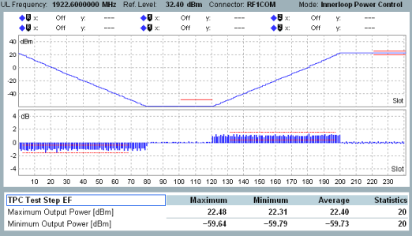

This section describes the results in inner loop power control mode for the TPC test step setups E, F, EF and GH.
The result view displays two diagrams and a table with statistical results. The results appear in two individual views ("Diagram", "Scalar") for the test step setups EF and GH. For selecting the result appearance, refer to "Selecting and Modifying Views".

The diagrams show the measured UE power vs slot and the corresponding power steps between the slots. For a detailed description, refer to "Monitor Mode".
The measured range of slots is configurable, see "Measurement Length". For background information concerning the test steps, see "Inner Loop Power Control TPC Setups".
The maximum UE's output power is determined from the UE power vs slot diagram in a configurable number of slots at the end of test step F and H. The minimum output power is determined at the end of test step E and G.
For configuration of the slot ranges, see "TPC Test Step Settings".
The columns indicate the maximum, minimum and average UE power value within the slot range. The column "Statistics" indicates how many UE power values have been considered for the statistical evaluation.
Limit lines are displayed in the UE power vs slot diagram for the relevant slots. The upper limit for the minimum output power and the lower and upper limit for the maximum output power are indicated.
For the test step setups EF and GH, the power steps statistical results are displayed only in the scalar view.
The "Power Steps..." table rows provide a statistical evaluation of the measured power steps within a test step. The power step sizes expected for the test steps E, F, G and H are -1 dB, +1 dB, -2 dB and +2 dB.
The "Power Steps Group..." table rows provide a statistical evaluation of the power step groups within a test step. Each group comprises 10 adjacent power steps. The step sizes within a group are summed up and result in a power step group value. Thus the total step sizes of power step 1 to 10, 2 to 11, 3 to 12 etc. are calculated. The expected power step group values for the test steps E, F, G and H are -10 dB, +10 dB, -20 dB and +20 dB.
Only power steps are considered, where the UE power of both adjacent slots is larger than the minimum output power and smaller than the maximum output power. Maximum and minimum output power is defined by the limit settings. The slots used for calculation of the maximum or minimum output power are not used for "Power Steps" and "Power Steps Group" calculation. The considered steps are also marked by limit lines in the lower diagram.
The columns indicate the maximum, minimum and average determined power step or power step group value. The column "Statistics" indicates how many power steps or power step group values have been considered for the statistical evaluation.
For the determined minimum and maximum power step group value, the number of the first slot of the group is indicated as "Beginning @ Slot".
For query of the results via remote control, see "Measurement Results".
These table rows provide a statistical evaluation of the measured power steps for which the indicated step size has been expected and which exceed the limit of single steps.
Configurable number of exceptions is allowed. If the configurable number of exceptions is exceeded, then the limit of single step applies.
The columns indicate the maximum, minimum and average measured exceptional power step value. The column "Statistics" indicates how many exceptional power step values have been considered for the statistical evaluation.